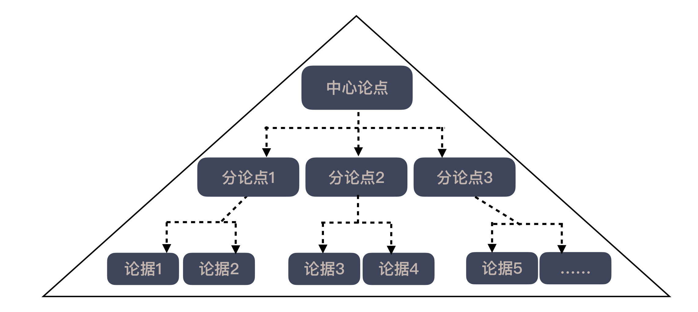

- 00 开篇词 程序员解决的问题，大多不是程序问题.md.html
- 01 10x程序员是如何思考的？.md.html
- 02 以终为始：如何让你的努力不白费？.md.html
- 03 DoD的价值：你完成了工作，为什么他们还不满意？.md.html
- 04 接到需求任务，你要先做哪件事？.md.html
- 05 持续集成：集成本身就是写代码的一个环节.md.html
- 06 精益创业：产品经理不靠谱，你该怎么办？.md.html
- 07 解决了很多技术问题，为什么你依然在“坑”里？.md.html
- 08 为什么说做事之前要先进行推演？.md.html
- 09 你的工作可以用数字衡量吗？.md.html
- 10 迭代0_ 启动开发之前，你应该准备什么？.md.html
- 11 向埃隆·马斯克学习任务分解.md.html
- 12 测试也是程序员的事吗？.md.html
- 13 先写测试，就是测试驱动开发吗？.md.html
- 14 大师级程序员的工作秘笈.md.html
- 15 一起练习：手把手带你分解任务.md.html
- 16 为什么你的测试不够好？.md.html
- 17 程序员也可以“砍”需求吗？.md.html
- 18 需求管理：太多人给你安排任务，怎么办？.md.html
- 19 如何用最小的代价做产品？.md.html
- 20 为什么世界和你的理解不一样？.md.html
- 21 你的代码为谁而写？.md.html
- 22 轻量级沟通：你总是在开会吗？.md.html
- 23 可视化：一种更为直观的沟通方式.md.html
- 24 快速反馈：为什么你们公司总是做不好持续集成？.md.html
- 25 开发中的问题一再出现，应该怎么办？.md.html
- 26 作为程序员，你也应该聆听用户声音.md.html
- 27 尽早暴露问题： 为什么被指责的总是你？.md.html
- 28 结构化：写文档也是一种学习方式.md.html
- 29 “懒惰”应该是所有程序员的骄傲.md.html
- 30 一个好的项目自动化应该是什么样子的？.md.html
- 31 程序员怎么学习运维知识？.md.html
- 32 持续交付：有持续集成就够了吗？.md.html
- 33 如何做好验收测试？.md.html
- 34 你的代码是怎么变混乱的？.md.html
- 35 总是在说MVC分层架构，但你真的理解分层吗？.md.html
- 36 为什么总有人觉得5万块钱可以做一个淘宝？.md.html
- 37 先做好DDD再谈微服务吧，那只是一种部署形式.md.html
- 38 新入职一家公司，怎么快速进入工作状态？.md.html
- 39 面对遗留系统，你应该这样做.md.html
- 40 我们应该如何保持竞争力？.md.html
- 划重点 “综合运用”主题内容的全盘回顾.md.html
- 划重点 “自动化”主题的重点内容回顾汇总.md.html
- 划重点 一次关于“沟通反馈”主题内容的复盘.md.html
- 划重点 关于“以终为始”，你要记住的9句话.md.html
- 划重点 关于“任务分解”，你要重点掌握哪些事？.md.html
- 加餐 你真的了解重构吗？.md.html
- 总复习 重新审视“最佳实践”.md.html
- 总复习 重新来“看书”.md.html
- 答疑解惑 如何分解一个你不了解的技术任务？.md.html
- 答疑解惑 如何在实际工作中推行新观念？.md.html
- 答疑解惑 如何管理你的上级？.md.html
- 答疑解惑 持续集成、持续交付，然后呢？.md.html
- 答疑解惑 持续集成，一条贯穿诸多实践的主线.md.html
- 结束语 少做事，才能更有效地工作.md.html
- 捐赠
28 结构化：写文档也是一种学习方式
你好，我是郑晔。
你写文档吗？我知道，你可能并不喜欢写文档，因为在你眼中，写文档是繁琐的，是旧时代软件工程的产物。
最开始我对写文档的印象也不好。
我的职业生涯是从一个通过了 CMM 5级认证的大企业开始的。可能今天很多程序员已经对 CMM 感到陌生了，它是能力成熟度模型（Capability Maturity Model for Software）的缩写，用来评估一个组织的软件开发能力，曾在国内风靡一时，许多软件公司都以拥有 CMM 认证为努力方向。
在这个极其重视过程的企业里，文档是非常重要的一环。但我看到的真实场景却是，一个软件已经上线运行了，大家才开始为了应付过程纷纷补写文档。
每个部门都有专门的过程负责人，要求你严格按照格式写文档，保证字体字号的正确性。然后，用 A4纸将文档打印出，封印在一个仓库里，再也无人问津。
然而，文档却是非常重要的。后来，我到过很多公司，凡是我能够比较快上手的，通常都是有比较详尽的文档，而那些文档缺失的公司，想要把信息梳理清楚，往往会花很长时间。
另外，我学习很多软件开发的相关知识，通常也是依赖各种各样的文档。对我们程序员这个走在时代前列的群体来说，大量阅读文档就是我们日常工作的一部分。
你发现矛盾了吗？一方面，我们讨厌写文档，另一方面，文档却对我们的工作学习有着不可忽视的作用。
我们竟然如此依赖于一个我们讨厌的东西。问题出在哪呢？
你为什么不喜欢写文档？
很多人会说，自己不愿意写那些无聊的流程文档，文档无聊，这固然是一个原因。不过，如今很多公司已经在这方面做得相当轻量级了，基本上只要求写必要的文档。那为什么依然有很多人不愿意写文档呢？
其实，很多人回避写文档的真正原因是，他掌握的内容不能很好地结构化。
在两种场景下，我们扮演的角色是不同的。写文档时，角色是作者；而读文档时，角色是读者。
作为读者，我们读文档，实际上就是按照作者梳理的结构在走，因为呈现出来的内容，多数是已经结构化的，读起来自然会比较顺畅；而作为作者，没有人告诉你结构应该是什么样，我们必须创造出一个结构来，而这正是很多人不擅长的。
想要成为一个好程序员，有一个良好的知识结构是极其重要的。
很多人抱怨程序员行业难，原因就在于，新技术层出不穷。是的，当你的知识都是零散的，任何新技术的出现，都是新东西。而当你建立起自己的知识结构，任何新东西都只是在原有知识上的增量叠加。
举个例子，今天炒得沸沸扬扬的微服务，小粒度的理念脱胎于 Unix 哲学中的“只做一件事，把它做好”，而服务化的理念则是当年SOA（Service-Oriented Architecture）的产物。理解了这些背后的动机，微服务就只剩下工具层面的问题。
有了这样的知识结构，当我要构建应用时，只是需要把工具适配进去，到时我再来学习相应的知识，这是非常有针对性的，学习的效率也会得到大幅度提高。
将零散的知识结构化，有很多种方式，但输出是非常关键的一环。
知识输出
不知道你小时候是不是有过给同学讲题的经历，有时候，明明你已经将知识学得很好，但给同学讲解起来时，却总是讲不明白。因为你的同学总能从你想都没想过的角度问问题，这些角度和老师教的不一样。
输出的过程，本质上就是把知识连接起来的过程。自己以为自己懂的东西，当你真的需要把它按照一个完整的逻辑呈现出来时，那些缺失的细节就会冒出来，而补齐这些细节，一张知识地图就逐渐成型了。
这个模块的主题是“沟通反馈”，将知识对外输出就是一种获得反馈的方式。很多人自以为对知识的理解已经很深入了，但给别人一讲，却发现自己怎么也讲不清楚，这就说明他理解的程度，远未到达他以为的高度。
输出的方式有很多，对于程序员来说，最常接触到的两种应该是写作与演讲。
你读到很多书、很多技术文章，这都是别人通过写作的方式进行输出的结果。而很多技术大会上，常常会有各路高手在台上分享自己的所得，这就是演讲的输出方式。
软件行业的很多大师级程序员都是对外输出的高手。比如，开源概念的提出者 Eric Raymond，他的《大教堂与集市》推开了开源大门；前面多次提及的Kent Beck，他写了《极限编程解析》、《测试驱动开发》、《实现模式》几本书；
而 Martin Fowler，几乎是对外输出的典范，他重新整理了很多似是而非的概念，让人们的讨论有了更标准的词汇，比如，重构、依赖注入（Dependency Injection）等等。
再往前，就要提到《计算机程序设计艺术》的作者高德纳，他系统地整理了算法的概念，为了好好写作，他甚至创造了一个排版软件 TeX。
也许你会说，说得很有道理，但我真的不擅长啊！这是因为你没有掌握基本的方法。
金字塔原理
首先，需要明确一点，我们的第一目标不是成为作家或演讲家，而只是要求把事情说清楚，把自己的知识清晰地呈现出来。那我们最好先来了解一下金字塔原理。看看下面这张图，你就知道它是怎么回事了：

首先，我们要确定想要表达的是什么，也就是找到中心论点，然后，再确定支撑这个论点的分论点，再来就是找到支撑每个分论点的论据。
从中心论点、分论点至论据，这样一层层向下展开，从结构上看，就像金字塔一样，所以，这个方法称之为金字塔原理。
以我们的专栏为例，我们的中心论点就是“高效工作是有方法可循的”，那支撑起这个中心论点的分论点就是我们的四个原则，针对每个原则，我们给出了各种实践和思想，这是我们的论据。
前面我说过了，一个人不擅长输出，更多的是因为缺乏知识的结构化，现在通过这样一种方式，就可以帮助自己，将某个知识结构化起来，有了结构，剩下的就是怎么输出了。
具体怎么输出就可以根据自己的喜好进行选择：要么自上而下的进行表达，也就是先说中心论点，然后说分论点1，用论据证明分论点1，再说分论点2，用论据证明分论点2，以此类推。
或者是自下而上来表达，先用证据得出分论点1，然后再得出分论点2，最后再归纳总结出中心论点。
听上去很简单，但不要以为懂得了金字塔原理，天下就尽在掌握了，你还需要更多的练习。
无他，唯手熟尔
我自己也曾经很不擅长写作和公开演讲，但是，这些东西都禁不住你大量的练习。我的对外输出，是从我刚开始工作不久开始的。那时候，市面上流行写 blog，我抱着好奇的心态开始了自己的 blog 之旅。
刚开始写 blog 的时候，我会把写好的东西分享给周边的朋友，他们会给我提出一些反馈，有赞许、有调侃、也有针对一些细节的讨论，这会让我觉得自己写的东西是有人看的，我也就有了坚持的原动力。
我也很羡慕那些很会写的人，于是，也经常会模仿他人的手法不断地改进自己的写作技巧。慢慢地，我的读者就从身边的人逐渐扩展开来，我也就有了更多的反馈。
正是这些反馈，让我对很多东西有了全新的认识，也就有了更强的分享动力，一个正向循环逐渐建立起来。到后来，写东西就成了我的习惯，坚持至今。
经过 blog 写作的锻炼，我写的东西有了自己的章法和套路，也就有了越来越多机会去在不同的地方写东西：给杂志写稿子，在网站上写东西，包括今天这个专栏，都起源于最初的 blog 写作。
除此之外，随着时间的累积，我收获的不仅仅是一些读者的赞许，还得到了更多的机会，比如，我人生中的第一次公开演讲，机会就来自于我 blog 的一个读者的邀请。
后来的一些职业机会，也是通过我写 blog 认识的朋友。考虑到我当时人在 IT 边缘的东北，能有后来的职业发展，很大程度都是常年坚持对外输出的结果。
同样，演讲能力也需要大量的练习。1977年《Book of List》杂志曾经有一个关于“最恐惧事物”的调查，结果显示，公开演讲名列第一，超过了死亡。所以，你害怕公开演讲是很正常的。
我至今依然记得我第一次公开演讲时手抖的样子，今天想想还是挺傻的。我第一次在几百人的大会上做演讲，居然有一段时间，只顾着看大屏，背对着听众，也是很糗的一段经历。
我一直很羡慕那些在台上侃侃而谈的人，比如，乔布斯。直到我读了《乔布斯的魔力演讲》，我才知道，即便强如乔布斯，他的演讲也是经过大量练习的。
我自己公开演讲看上去正常一些，是我在经过一个咨询项目的大量练习之后。那时候，几乎每天要给客户讲东西，害得我只能不停地准备、不停地讲。所以，本质上，对演讲的惧怕只是因为练习不足。
好了，你现在已经了解获取这些技能的真谛了，无他，唯手熟尔！
总结时刻
程序员对文档有着一种矛盾的情感，一方面，需要依赖于文档获得知识，另一方面，很少有人愿意写文档。
文档在程序员心目中“形象不佳”，主要是传统的流程写了太多无用的文档。但对更多人来说，不愿意写文档，本质上是因为知识不能很好地结构化。
有结构的知识会让新知识的学习变得更加容易，今天很多人抱怨新知识层出不穷，就是因为知识过于零散，当知识有结构之后，学习新知识就只是在学习增量，效率自然就会大幅度提升。
输出是一种很好的方式，帮助你把知识连接起来，写作和做公开演讲都是很好的输出方式。
阻碍很多人进行知识输出的一个重要原因是缺乏输出的模型，金字塔原理就给出一个从中心论点到分论点，再到论据的模型，帮助我们将知识梳理出来。
而想要做好知识输出，还需要不断地进行练习，写作和做公开演讲都是可以通过练习提高的。
如果今天的内容你只能记住一件事，那请记住：多输出，让知识更有结构。
最后，我想请你分享一下，你的工作中，有哪些机会将自己的知识输出呢？欢迎在留言区写下你的想法。
感谢阅读，如果你觉得这篇文章对你有帮助的话，也欢迎把它分享给你的朋友。
© 2019 - 2023 Liangliang Lee. Powered by gin and hexo-theme-book.